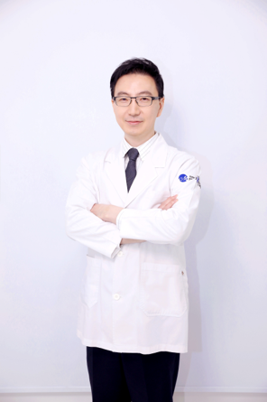

ผ่าตัดเลื่อนขากรรไกร
แก้ปัญหาคางยื่น คางสั้น หรือการสบฟันผิดปกติรุนแรง ร่วมกับแผนจัดฟันตามความจำเป็น
- วางแผนร่วมทันตแพทย์จัดฟัน
- จำลองผลลัพธ์ 3D ก่อนผ่าตัด
ศัลยกรรมโครงหน้า · ขากรรไกร · ทันตกรรมเฉพาะทาง
Maxillofacial M Surgery Clinic มุ่งเน้นการแก้ไขโครงใบหน้าและขากรรไกรอย่างปลอดภัย โดยทีมศัลยแพทย์ช่องปากและแม็กซิลโลเฟเชียล ผสานการวินิจฉัย 3D และแผนการรักษาเฉพาะบุคคล

เราไม่ได้มองเพียงแค่ “ฟันสวย” แต่ให้ความสำคัญกับสมดุลของโหนกแก้ม คาง ขากรรไกร และท่อหายใจ เพื่อผลลัพธ์ที่ดูเป็นธรรมชาติและใช้งานได้จริงในระยะยาว
วิเคราะห์โครงสร้างใบหน้า ฟัน และข้อต่อขากรรไกรร่วมกัน ไม่แยกส่วน
ออกแบบการผ่าตัดด้วยซอฟต์แวร์ 3D และเทมเพลตผ่าตัดแบบคอมพิวเตอร์
ติดตามอาการบวม การสบฟัน และการฟื้นตัวอย่างใกล้ชิดหลังผ่าตัด

“เป้าหมายของเราคือใบหน้าที่กลมกลืนกับบุคลิกภาพของคุณ ไม่ใช่แค่เปลี่ยนรูปทรง”— ทีมศัลยแพทย์ช่องปาก Maxillofacial M
บริการหลัก
ครอบคลุมตั้งแต่การปรึกษา วางแผน 3D ไปจนถึงการผ่าตัดและติดตามผล
แก้ปัญหาคางยื่น คางสั้น หรือการสบฟันผิดปกติรุนแรง ร่วมกับแผนจัดฟันตามความจำเป็น
ปรับมุมใบหน้าให้ดูอ่อนลงหรือเรียวขึ้น โดยคำนึงถึงเส้นประสาทและสมดุลใบหน้า
สอบถามรายละเอียดลดความกว้างของมุมกรามสำหรับใบหน้าทรง V-line อย่างปลอดภัยภายใต้การวางแผน 3D
สอบถามรายละเอียดแก้ไขใบหน้าที่ดูยาวหรือมีสันโหนกเด่นชัด ให้สัดส่วนดูกลมกลืนขึ้น
สอบถามรายละเอียดปรับปลายคางด้วยการผ่าตัดหรือรากเทียมตามแผนร่วมกับศัลยแพทย์ช่องปาก
สอบถามรายละเอียดแพ็กเกจครบวงจรสำหรับเคสสบฟันซับซ้อน ตั้งแต่จัดฟันจนถึงผ่าตัดและรักษาเสร็จสิ้น
สอบถามรายละเอียดเทคโนโลยี
เรานำ CBCT, สแกนฟันดิจิทัล และซอฟต์แวร์จำลองการผ่าตัดมาใช้ร่วมกัน เพื่อให้คุณเข้าใจแผนการรักษาก่อนตัดสินใจ

ประเมินโครงกระดูก ข้อต่อ TMJ และท่อหายใจอย่างละเอียด
จำลองการเคลื่อนกระดูกและรูปทรงใบหน้าหลังผ่าตัด
เทมเพลตและไกด์ช่วยให้การผ่าตัดแม่นยำตามแผน
ประสานการสบฟันและรอยยิ้มหลังศัลยกรรมขากรรไกร
สถานที่และสิ่งอำนวยความสะดวก
พื้นที่สะอาด ทันสมัย และออกแบบเพื่อความปลอดภัยของผู้ป่วยศัลยกรรมโครงหน้า


ขั้นตอนการรักษา
พูดคุยความต้องการ ตรวจช่องปาก ถ่ายภาพ และสแกน 3D ตามความจำเป็น
ศัลยแพทย์ช่องปาก ทันตแพทย์จัดฟัน และทีมเวชระเบียนร่วมออกแบบแผน
อธิบายขั้นตอน ความเสี่ยง ระยะเวลาพักฟื้น และค่าใช้จ่ายอย่างโปร่งใส
ดำเนินการภายใต้วิสัญญีและทีมพยาบาลเฉพาะทาง
นัดตรวจติดตามอาการบวม การสบฟัน และการดูแลที่บ้านอย่างต่อเนื่อง
ทีมแพทย์
ผู้นำทีมวางแผนและผ่าตัดศัลยกรรมโครงหน้าด้วยประสบการณ์ระดับสากล


ผู้อำนวยการ
ศัลยแพทย์ช่องปากและแม็กซิลโลเฟเชียล · Oral & Maxillofacial Surgeon
ผู้เชี่ยวชาญด้านผ่าตัดเลื่อนขากรรไกร ตัดกราม ตัดโหนกแก้ม และเคสสบฟันซับซ้อน วางแผนรักษาด้วยเทคโนโลยี 3D เพื่อผลลัพธ์ที่ปลอดภัยและสมดุล
นัดปรึกษาผู้อำนวยการไฮไลท์สถานที่
ตั้งแต่ห้องปรึกษา ห้องรักษา ไปจนถึงห้องผ่าตัดและพักฟื้น
อุปกรณ์ครบครัน ระบบแสงส่องสว่างและวิสัญญี
ยูนิตทันสมัย สะอาด และออกแบบเพื่อความสบาย
ดูแลใกล้ชิดหลังศัลยกรรมโครงหน้า
เสียงจากผู้ป่วย
คำถามที่พบบ่อย
หากมีคำถามเพิ่มเติม ติดต่อทีมงานได้ตลอดเวลาทำการ
ผู้ที่มีปัญหาคางยื่น/สั้น กรามใหญ่ สบฟันผิดปกติ หรือใบหน้าไม่สมดุลจากโครงกระดูก และผ่านการประเมินสุขภาพจากแพทย์แล้ว
ขึ้นอยู่กับขอบเขตการผ่าตัด โดยทั่วไปบวมชัด 1–2 สัปดาห์แรก และค่อยๆ ดีขึ้นใน 4–8 สัปดาห์ ทีมแพทย์จะให้แนวทางเฉพาะบุคคล
เคสที่เกี่ยวกับการสบฟันมักต้องจัดฟันก่อนและ/หลังผ่าตัด ส่วนเคสตัดกรามหรือโหนกแก้มอย่างเดียวอาจไม่จำเป็น ขึ้นกับการวินิจฉัย
มีทีมงานสื่อสารภาษาอังกฤษ ช่วยนัดหมาย เอกสาร และคำแนะนำหลังผ่าตัดสำหรับผู้ที่เดินทางมารักษา
กรอกแบบฟอร์มด้านล่าง โทร 02-540-8275 หรือ Line Official — เจ้าหน้าที่จะติดต่อกลับภายใน 24 ชม.
ติดต่อเรา